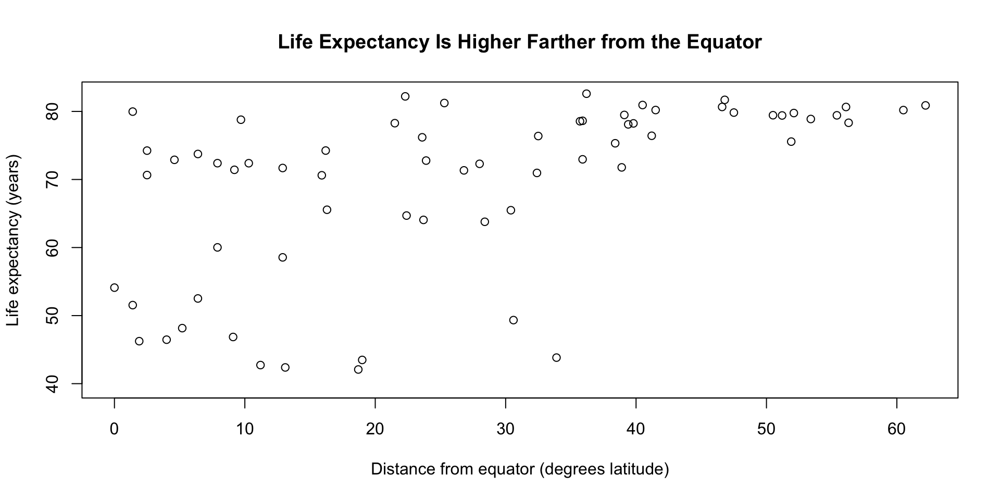

Session 4 · MLDS Bootcamp · Fall 2026
demo-project.zip file and unzip itdemo-project.Rproj and view the contentsRscript run_all.Rreport.html in a web browserRscript run_all.R is a shell commandSee if there’s a relationship between life expectancy and how far a country is from the equator
The data sets we’ll be using are:
gapminder.csv: includes country and life expectancy datacountry_attributes.csv: includes country and latitude dataOur final deliverable will be to generate a report with a plot and takeaway
setwd() is neededmy-project~/Desktopraw/ is never touched by hand — treat it as read-onlyprocessed/ starts empty — and then everything in it is generated by an R scriptdata folder in your my-project folderraw
gapminder.csv and country_attributes.csv filesprocessed1_clean.R2_transform.R3_plot.Rgapminder.csv is pretty cleancountry_attributes.csvscripts folder1_clean.Rcountry_attributes.csv file using the tidyversena = c("", "NA") treats blank cells and the literal text "NA" as missing — both show up in this fileglimpse(), duplicated(), and n_distinct() to answer:
Rows: 67
Columns: 4
$ country <chr> "Afghanistan", "Albania", "Algeria", "Angola", "Argentin…
$ land_area_km2 <dbl> 652860, 27400, 2381740, 1246700, 2736690, 7692024, 82409…
$ latitude <dbl> 33.9, 41.2, 28.0, -11.2, -38.4, -25.3, 47.5, 23.7, 50.5,…
$ climate_zone <chr> "Arid", "Temperate", "Arid", "Tropical", "Temperate", "A…[1] 1[1] 66" Chile" and "Japan " have leading and trailing spaces
str_trim() removes themstr_to_title() fixes stray casing like "germany" or "FRANCE"formatted
country columndplyr!"Usa" and "Brasil" need someone who knows these should be "United States" and "Brazil"case_when() is the function for one-to-one substitutionsclean_names
"Usa" to "United States""Brasil" to "Brazil"?case_when to see syntax examplesdistinct() function to remove duplicate valuescleaned dataframe that has no duplicate rowscleaned dataframe inside the data/processed folder as country_attributes_clean.csv1_clean.Rdata/processed/ for the new fileWe have two clean files:
# A tibble: 3 × 6
country year pop continent lifeExp gdpPercap
<chr> <dbl> <dbl> <chr> <dbl> <dbl>
1 Afghanistan 1952 8425333 Asia 28.8 779.
2 Afghanistan 1957 9240934 Asia 30.3 821.
3 Afghanistan 1962 10267083 Asia 32.0 853.# A tibble: 3 × 4
country land_area_km2 latitude climate_zone
<chr> <dbl> <dbl> <chr>
1 Afghanistan 652860 33.9 Arid
2 Albania 27400 41.2 Temperate
3 Algeria 2381740 28 Arid country, lifeExp and latitude columnscountry column — that’s our join keyscripts folder called 2_transform.Rgapminder.csv, country_attributes_clean.csv)gapminder data to year == 2007[1] 142# A tibble: 2 × 6
country year pop continent lifeExp gdpPercap
<chr> <dbl> <dbl> <chr> <dbl> <dbl>
1 Afghanistan 2007 31889923 Asia 43.8 975.
2 Albania 2007 3600523 Europe 76.4 5937.[1] 66# A tibble: 2 × 4
country land_area_km2 latitude climate_zone
<chr> <dbl> <dbl> <chr>
1 Afghanistan 652860 33.9 Arid
2 Albania 27400 41.2 Temperate left_join() to combine the tables on the common country column[1] 142# A tibble: 10 × 9
country year pop continent lifeExp gdpPercap land_area_km2 latitude
<chr> <dbl> <dbl> <chr> <dbl> <dbl> <dbl> <dbl>
1 Afghanistan 2007 3.19e7 Asia 43.8 975. 652860 33.9
2 Albania 2007 3.60e6 Europe 76.4 5937. 27400 41.2
3 Algeria 2007 3.33e7 Africa 72.3 6223. 2381740 28
4 Angola 2007 1.24e7 Africa 42.7 4797. 1246700 -11.2
5 Argentina 2007 4.03e7 Americas 75.3 12779. 2736690 -38.4
6 Australia 2007 2.04e7 Oceania 81.2 34435. 7692024 -25.3
7 Austria 2007 8.20e6 Europe 79.8 36126. 82409 47.5
8 Bahrain 2007 7.09e5 Asia 75.6 29796. NA NA
9 Bangladesh 2007 1.50e8 Asia 64.1 1391. 130170 23.7
10 Belgium 2007 1.04e7 Europe 79.4 33693. 30280 50.5
# ℹ 1 more variable: climate_zone <chr>joined table, add a column called dist_from_equator
latitude# A tibble: 6 × 4
country lifeExp latitude dist_from_equator
<chr> <dbl> <dbl> <dbl>
1 Afghanistan 43.8 33.9 33.9
2 Albania 76.4 41.2 41.2
3 Algeria 72.3 28 28
4 Angola 42.7 -11.2 11.2
5 Argentina 75.3 -38.4 38.4
6 Australia 81.2 -25.3 25.3R folder and copy the functions.R script into itSource and notice the custom function appear in the Environment
joined code block to create two columns:
dist_from_equator: absolute value of latitudeequator_zone: use the classify_equator_zone functionjoined dataframe to a file called final_gapminder_country_attributes_clean.csv in the /data/processed folder2_transform.Rdata/processed/ for the new file3_plot.R in the scripts folderdist_from_equator (x) against lifeExp (y)
3_plot.Rreport_simple.Rmd notebookknit it together to view the reportCreate a file called run_all.R, paste in the following code and save the file:
my-project folder with you
my-project.Rproj to open the projectRscript run_all.R in the Terminal in R to run all the R scripts and see the outputs.Rproj)raw folder)scripts folder)R folder).Rmd file).R file)